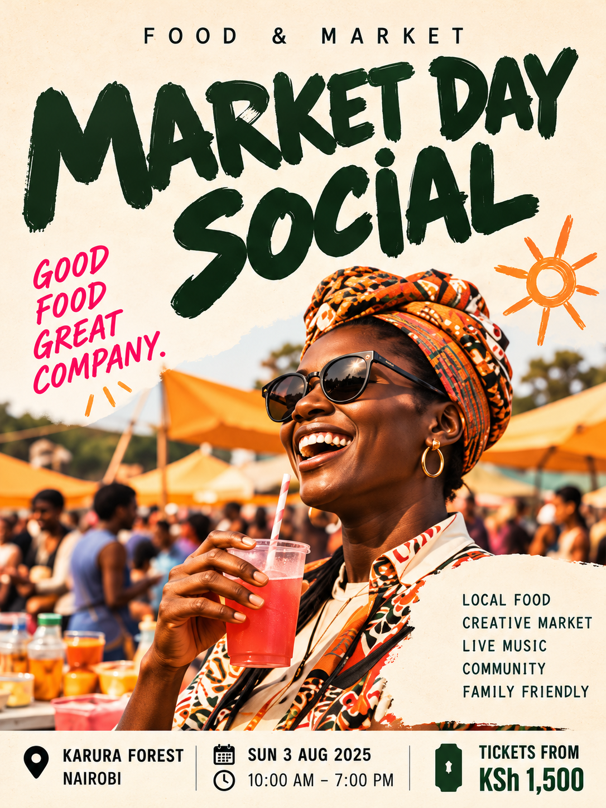

Poster study / 08 · Food / Community market
MARKET DAY SOCIAL
“Good food, great company.” — as printed on the artwork


The approved original is shown here exactly as it was made: nothing is cropped, re-lettered or recoloured. Print outputs a single A4 portrait sheet with the artwork at maximum size; the PNG is the full-resolution file for social, slide and layout use.
Why it exists
An imagined market where independent vendors, food stalls, small brands and friends meet for a bright, unhurried day.
What is printed on the artwork
- Category line
- Food & market
- Tagline
- Good food, great company.
- Key line-up
- Local food
- Creative market
- Live music
- Community
- Family friendly
- Venue
- Karura Forest, Nairobi
- Date
- Sun 3 Aug 2025
- Time
- 10:00 AM – 7:00 PM
- Entry
- Tickets from KSh 1,500
Speculative design. The fictionally branded venue, date and prices printed inside the artwork are illustrative and are not a real event or ticket offer.
Design decisions
- Who it is for
- Food explorers, independent vendors, friends
- Typography direction
- Lilita One — chosen for rounded, friendly character. The small supporting information uses Inter for readability.
- Visual idea
- Chunky approachable lettering feels almost hand-painted; playful stamps, striped awnings and contrast keep the concept easy to recognize.
- Personality
- Playful · Local-feeling · Social
Palette
Paper cream
#F6EFE2
#F6EFE2
Brush green
#1F4433
#1F4433
Tomato
#E0533F
#E0533F
Marigold
#EDA32F
#EDA32F